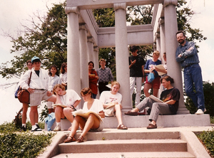

High School Spirit
By Barbara Shoup
The summer before I left for college, I worked second shift at a map factory. Every afternoon at two o’clock, I set out to catch the bus that would take me there. It was a long walk. It was always hot, I was always tired. I felt nauseous on the bus, I rode with my eyes closed. When I got off, I dragged myself across a busy street, across a little park, into the factory, where it felt cool--but only for a moment. Promptly at three, I punched the time clock and walked into the rhythmic din. Big steel machines lined the narrow path I followed back to the area where I worked. Maps were spitting out of them, stacking up; beautiful pastel maps of places I longed to see.
My job was packing. I stood on the assembly line with a dozen or so sad, tired women, most of them the age of my mother, lifting globes and atlases from the flat wooden trolleys and placing them in the boxes going by on the conveyor belt. My back and shoulders hurt. I felt as if the concrete floor were coming right up through my feet. I watched the clock, watched the high windows darken to night. Soon, I told myself, your real life will begin. But I could not really believe it.
Years later, smack in the middle of this real life, I stand with my high school writing students in a map factory in Indianapolis. There is the same hum and throb and clatter of machinery, the same smell of print and glue and paper. For just an instant, there is the claustrophobia of that distant summer, the longing. Then, watching my students absorb this new world, there is the jolt of pleasure that comes to me sometimes when I am with them, that almost alarming joy. The pretty pastel rosettes that workers feed into round molds delight them. One mold is cool and they are allowed to touch the inside of it, to feel the cavities that make mountains rise on the surface of each globe. There are stacks of half-globes everywhere.
“Hey, these would make cool bike helmets,” someone says, and everybody laughs.
Hundreds of finished worlds have been sprayed with lacquer and are suspended above us, a whole universe. When they are dry, the ball poker rolls them down from their tracks with his big stick, like God. Smitten with words, my young writers love this job name: “ball poker.” They love everything they see.
What I love is to be with them. The shock of the ordinary world seen as they see it, fresh and new. The true response which they have not yet learned to hide. There, standing among them, surrounded by miniature worlds, I think, This is what church must feel like to some people.
I was not raised in any church, I had virtually no religious training as a child. One of the worst experiences of my girlhood was a week I spent at a Christian camp when I was in junior high. I had gone out of desperation, to protect my interest in a fickle friendship with a girl I’d worshipped since grade school, and she ditched me upon arrival, as I had feared she would. All alone in a strange place, I went to meals, to recreational activities, to Bible study like a zombie. But even in such misery, even trying my best to be invisible, I could not help but voice the questions that invariably popped into my head. Were Adam and Eve cave people? If your wife or husband dies when you are very young and you remarry, who will you be with in heaven?
More and deeper questions plagued me in the late Sixties and early Seventies, when, as a young mother, I joined the Lutheran church, feeling an obligation to offer my two daughters the religious foundation that I had not had. How can I feel that I, a woman, truly belong here, when everything we sing or speak is He? Why do we send so much money to missionaries overseas when there are families six blocks away from our church who desperately need our help? Why are there no black people in our congregation? Why won’t good Christians take a stand about the war in Vietnam?
I was too literal a person for organized religion, I decided. I couldn’t find much connection between what the church taught and what it practiced. I couldn’t and still can’t fathom the kind of personal relationship with Jesus that so many Christians describe. Nor can I make sense of or find solace in the promise of redemption. I hate the idea that we are all sinners, bad at the core, and only Jesus can save us. I could believe in the concept of one life on earth as random, meaningless, a quirk of biology, before I could believe in a father-god who creates us in love, yet doles out such disparate earthly existences.
So I left the church and set out on my own spiritual path, cobbling a personal religion that better suited the person I am still hoping to become. Be Here Now. Look, question, learn. Remember paradox. Never lie to yourself.
I believe in Vermeer’s “View of Delft.” In Tim O’Brien’s “Lives of the Dead,” which begins: “But this too is true: stories can save us.” In Kurt Vonnegut’s advice to a nursery full of newborns via his character, Elliot Rosewater: “Goddamnit, you’ve got to be kind.” And I believe in my young writers. They crack open the world I thought I knew. Unfailingly, in the strangest ways, they drive lessons I thought I’d already learned deeper and deeper inside me.
I’ve been fascinated the last few years by my students who are devout Christians, whose spiritual lives inform the work we do together. Where does this faith come from, I wonder? Will it last? Some, I think, are surely influenced by the various ways in which contemporary Christian churches market faith to teenagers. Youth group activities like skiing and camping, mission trips to communities from Appalachia to South America appeal to the their yearning to belong. Christian music festivals make faith cool. Last year, NPR’s “Morning Edition” interviewed some of the thousands of teenagers who had converged on Washington, D.C. for a weekend of worship and witness. There was much laughter and shouting in the background, the heavy thump of bass. Earnest, breathless voices spoke of the inspiration they felt gathered with so many others of like minds. One boy declared, “Yeah, we’re moshing for Jesus.”
I saw them in my mind’s eye--flannel-shirted boys with shaved heads and earrings; girls in ripped jeans with pre-Raphaelite hair--lost in the music, and I wondered, What would Jesus think of a bunch of teenagers careening around a mosh pit, writhing and flailing in His name?
Writing this now, I hear an edge of disdain in my words, and I stop and try to understand how I really feel about Christianity, remember that anything I say about the world has some effect on the young writers I teach. I count on them to keep me honest, both in my life in my work. I am humbled by the way they reveal their true selves to me. Often, I am flooded in their presence by what I have only ever been able to name as love. I would never willfully hurt them.
So do I delete that cynical reference to moshing for Jesus when I know that some of them may very well have moshed for Jesus themselves? And what about thoughts I’ve had about the Happening, a twice-yearly Christian youth gathering that I know a number of my students have found deeply sustaining? An ecumenical weekend of peace and love, the Happening seems tailor-made for the children of the children of the Sixties. Upon arriving Friday evening, participants receive a dozen or so letters from people they know and some they have never met, expressing pleasure that they have come to celebrate the life of Jesus. Telling them that they are loved. All weekend they participate in spiritual activities designed to bring them closer to each other and to Christ.
It is a good thing for so many of them, I know. Lots of these kids come from broken or troubled families; some have parents whose love is--or seems to them to be--contingent upon their academic and athletic success. Some deal with alcoholism, drug addiction, sexual confusion. They are searching for something to believe in, to rely on, and I remind myself of an E.M. Forster quote that I love: “Only connect.”
But I cannot quiet the stubborn, questioning voice inside me. What good is a weekend of amorphous, unconditional love and compassion if it doesn’t cause every single one of my students who experienced it to come to school on Monday, instantly notice the troubled, friendless classmate among them, and invite her along to the Abbey, where they spend endless hours drinking coffee, journaling, talking about Life? How does this weekend’s Happening balance with the activities of the weekend before, which for some included gathering at a friend’s empty house to drink themselves into oblivion?
These, of course, aren’t questions of faith, but of action. And they certainly do not apply to the lives of all the Christian teenagers I know. The best of these young people live according to Christ’s teachings as completely and intelligently as any human being could; some have had the kind of life experiences from which a deep, complex religious faith is forged. They spoke from their hearts about what they believed; they thoughtfully considered the questions I asked them. I should attend Open Table some Sunday evening, several of them told me--a fledgling congregation of Disciples of Christ that they are helping to establish. Despite--no, because of my dread of group spiritual experiences, it seemed only right for me go.
When I arrive at the little chapel, people are milling around, amused, waiting for the two kids in charge of tonight’s service to return from the grocery store, where they’ve gone in a rush, having realized that they’ve forgotten about providing for communion. One of my students introduces me to a kind-looking woman who, along with two other women, ordained pastors in the Disciples of Christ, were instrumental in beginning the new church. Her sincere welcome unnerves me a bit, and I let her know, awkwardly, that I’m writing about the spiritual lives of teenagers and I’ve come tonight to observe. It’s a wonderful thing that’s happening here, she tells me. What a surprise, what a pleasure it is to her that the congregation has turned out to be made up of so many young people.
In fact, of the twenty or so people here tonight, most of them are teenage girls. They’re dressed comfortably in jeans or gypsy dresses, one in black “Goth” attire. There’s a lot of laughing and hugging going on, spirited recountings of the weekend’s adventures. Then the two kids who are to lead the worship tonight burst in, red-faced from the cold, bearing a loaf of bread and a bottle of grape juice, which they set on the altar, and it is time to begin.
I sit alone in a back pew, notebook in hand, scribbling impressions. Cozy chapel, red carpet, bread in aluminum pie pan. Braids, black beret, bowler hat. Pearl Jam tee-shirt. White spindly neck.
Announcements are made: The Park Manor Christian Church, an African-American congregation in Chicago, has learned of them and is including them in their prayers. Next Sunday, the Week of Compassion begins, a time to respond to the troubled people around the globe. In Nicaragua, for example, there is 65% unemployment, and there is a plan afoot to help the Disciples of Christ clergy working there to survive by sending farm animals. Unable to support themselves through church resources, they will raise and butcher the animals to make a living, thus allowing them to continue their ministry for Christ. Two weeks from tonight, there will be a pot-luck dinner and a meeting afterwards to begin work on a mission statement and a brochure that will describe what Open Table is.
Business concluded, it is time for the passing of the peace, a custom which never fails to make me feel like a child under the watchful eyes of her parents, directed to be nice. Clearly, though, that is not the way the young people here feel about it. The ritual takes a while, for many of them get up and move around the room, embracing one another and the adults among them, offering words of love and support.
There is no sermon, just a gospel reading--First Corinthians 8:1-13 and a brief interpretation of the text given by the two leaders. They raise the questions that the scripture suggested to them. What are one’s obligations as a Christian? When is it right to witness by refusing to participate in a custom that reflects a different kind of belief? When is it disrespectful not to participate in such a custom; when might participating offer an opportunity to teach non-believers about Christ? If you are “puffed-up” in your knowledge of God, you risk behaving uncharitably, disrespectfully toward others.
It’s sort of like having dinner with a vegan, one of the kids says in the discussion that ensues. You might like meat yourself, but you don’t eat it out of respect for the person for whom vegetarianism is a moral imperative. Or like not drinking when you’re around a recovering alcoholic. You don’t drink as a means of showing your respect.
One of the adults tells about attending a Hindu wedding, at which the guests are expected to pledge respect to the Hindu god. Not to participate in the ritual would be an insult to the bridal couple, she knew; but she could not bring herself to make the pledge. Each situation is different, she says. All you can do is sit quietly and wait until you feel God pull you one way or the other.
Rules maintain a kind of forced respect, the group decides. They’re rather like a traffic light. You stop or go based on what the light tells you. If everyone in the world knew God’s grace, life would be more like a four-way stop, which causes people to stop for a moment, acknowledge the presence of others, and communicate with them to get through the intersection safely.
The leaders say a prayer; then there is silence while the group waits, heads bent. In quiet voices, one by one, individuals ask God to watch over their loved ones. They ask for strength, forgiveness. They give thanks for the gifts He has given. After each person speaks, the congregation murmurs, “Lord in your mercy, hear our prayer.” In time, another silence falls. Then a hymn is sung, the offering taken in an upside-down tambourine, blessed.
When Communion is given, I find myself uncomfortable again, perhaps more so for one of the questions just considered. When is it disrespectful not to participate in a ritual in which you do not believe? Like the woman who spoke of the Hindu wedding, I heed my inner voice. To take communion would be false, it tells me; so while the others file up to the altar, break off a piece of bread, drink from the bottle of grape juice, I remain, self-conscious, in my place.
But when I go to observe again, the next Sunday, John Lennon is singing “Imagine,” and the leaders, a mother and daughter, ask the group to join in a circle so that we might celebrate communion together. My inner voice says the same thing it said the week before: don’t go; but to sit apart from the circle of worshipers, to risk in some way spoiling the ritual that is so obviously meaningful to every other person here seems inexcusably rude. So, I rise and go to the altar. I break off a tiny piece of bread, take a tiny sip of grape juice--as if to take such small portions could lessen my self-betrayal. I join the circle, all of us holding hands, swaying--no one, it seems to me, quite relaxed--to U-2’s “Angel in Harlem.”
I am relieved when it is over. Driving home, I finally see that, no matter how much I respect the faith of these students whom I love, my own feelings about Christianity, about group spiritual experiences in general won’t allow me to write about it objectively. The very questions I’ve been asking are faulty, unconsciously shaped by what I don’t believe. This realization and a growing sense of my students’ earnest hope for my salvation shocked me into learning again what I teach. Good writing is an act of self-discovery. The only questions that matter, writing about anything, are the ones we ask ourselves.
Every fall I take my band of teenage writers to Crown Hill cemetery for an afternoon. It is a good place to visit because it is about dying, and anything about dying is about living as well. It is useful to wander among the graves of those whose lives are over. To feel grateful that you are still here, living the story of your life.
This year, the day we go is one of those last almost-warm days. The sky is cloudless, blue; the only leaves left on the trees are yellow. I spread a red-checked tablecloth on James Whitcomb Riley’s grave, put a tape of opera arias into the little boom box I’ve brought, and we eat our lunches. We talk about things we know and wish we knew. From where we sit, the skyline of the city we live in looks like Oz.
When we have finished, I send them off with their notebooks to explore and reflect. All but one girl, who has just finished writing a beautiful story about her mother, who died a few years ago, after a long illness, and who is buried here. I’ve brought flowers, and we take them to her mother’s grave. Then we sit down on the grass and talk. She tells me about her mother: what she was like, how much she loved her and feared losing her. How empty she felt when she was finally gone. How, even now, she often cannot sleep at night.
She says, “The worst thing is, I wonder what my life would have been like if my mother hadn’t died, and I can’t even imagine it.”
As she speaks, I look up and see two deer standing among the gravestones in the distance. I touch her shoulder. “Look,” I say. We sit quietly, and the deer begin to lope toward us. They come within twenty feet of where we sit, upon the grave. They are so beautiful, so graceful. Males with big antlers. They take a long look at us, then flick their white-bobbed tails, and bound away.
My student looks at me as if she’s seen a ghost. “Maybe it’s stupid,” she says. “But do you think that meant something? A kind of sign?”
“Yes,” I say. “Oh, yes.”
And on this ordinary day, in this unlikely place, I am flooded with light. Again, teaching, I remember what I thought I knew: it matters to believe in Something. To be open to, deserving of the unexpected moments when it shows its vast, kind spirit.
Originally published in Urban Tapestry
BARBARA'S BLOG

Read thoughts on books, authorship, teaching, and life on Barbara's blog.
BOOKS

Browse Barbara's books or read her essays.
CONTACT

Want to know more? Find media, press and publicity information here.
© Barbara Shoup 2012